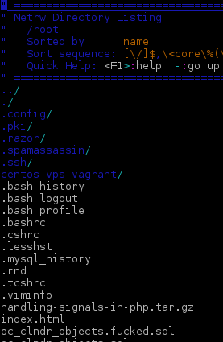
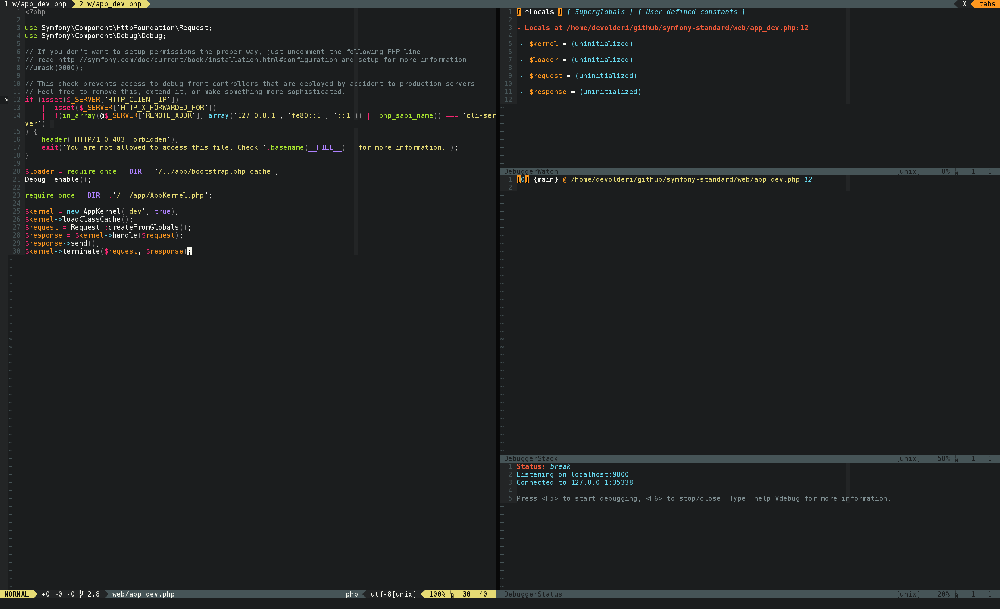

Vim for PHP Developers
Why on earth would any sane person use Vim for PHP development ? Is it still relevant in the days of full blown IDE's ?
The Goal of this presentation
- Touch some basics
- Show some PHP specific things
- Inspire you to research more about Vim
What is Vim ?
“Vim is a highly configurable text editor built to enable efficient text editing. It is an improved version of the vi editor distributed with most UNIX systems.”
“Vim is often called a "programmer's editor," and so useful for programming that many consider it an entire IDE. It's not just for programmers, though. Vim is perfect for all kinds of text editing, from composing email to editing configuration files.”
What is Vim NOT ?
“Vim isn't an editor designed to hold its users' hands. It is a tool, the use of which must be learned.”
“Vim isn't a word processor. Although it can display text with various forms of highlighting and formatting, it isn't there to provide WYSIWYG editing of typeset documents. (It is great for editing TeX, though.)”
Why Vim for PHP development
- Vim has everything (or almost) a PHP developer needs
- We just need to unlock or find the “right” feature
- Once you know it, it allows you to write while thinking
First
The editor, what is it about
Modal editor
Hu ? Modal editor?
A modal editor has different modes of operation.
Normal mode
In this mode everything you “type” is interpreted as a command you give.
Insert mode
This is what you are used to, start typing and you are adding text
Visual mode
This mode could be compared to selecting some text
Search mode
This is kinda obvious search
Moving around
Basic movement

Faster movement
- w,e forward word
- b,ge backward word
- 0 absolute begin of line
- ^ begin of line
- $ end of line
- gg begin of document
- G end of document
- {N}G goto linenumber
- ctrl + f forward page
- ctrl + b backward page
- f,F forward/backward to occurence of char
- t,T forward/backware before occurence of char

Commands
Why? Commands! This is just a text editor, why don't you just let me write some text.
Common commands
- Quit: “:q”
- Write: “:w”
- Copy: “y” (called yank)
- Cut: “d” (delete)
- Paste: “p”
- Replace from current postion: “R”
- Substitute (search and replace):
“:s/{pattern}/{substitution}/{flags}” - Undo: “u”
- Redo: “ctrl + r”
Ranges
Most commands support ranges, ranges are defined like
“:{start},{end} {command}”
- Visual selection: “:'<,'>”
- All lines in file: “:%”
- From line 4 to 10; “:4,10”
“:help range”
Formatting text
- Center align: “:ce {width}”
- Right align: “:ri {width}”
- Left align: “:le {indent}”
- Format paragraph: “gqip”
- Format current selection: “gq”
“:help formatting” “:help text-objects”
Extendability
Vim has it's own programming language VimL.
Most plugins are written in VimL
But not limited to it, you can use python, ruby, perl and lua too.
Configure Vim
The configuration will be done in “~/.vimrc” and addidional plugins to make our lives easier go into “~/.vim”
Demo configuration
1 " nocompatible must be first ( use the real vimpower ) 2 set nocompatible
4 " backup rules 5 set backup " enable backup files (.txt~) 6 set undofile " enable persistent undo 7 8 silent execute '!mkdir -p $HOME/.vim/tmp/backup' 9 set backupdir=$HOME/.vim/tmp/backup " where to store backup 10 silent execute '!mkdir -p $HOME/.vim/tmp/swap' 11 set directory=$HOME/.vim/tmp/swap " where to store swap 12 silent execute '!mkdir -p $HOME/.vim/tmp/views' 13 set viewdir=$HOME/.vim/tmp/views " where to store view 14 silent execute '!mkdir -p $HOME/.vim/tmp/undo' 15 set undodir=$HOME/.vim/tmp/undo " where to store undo
17 " syntax 18 syntax on " enable syntax highlighting 19 " filetype 20 filetype on " enable filetype detection 21 filetype plugin on " enable filetype plugins 22 filetype indent on " enable filetype indentation
Demo configuration
24 " tabstop settings 25 set tabstop=4 " a tab will be represented with 4 columns 26 set softtabstop=4 " <tab> is pressed in insert mode 4 columns 27 set shiftwidth=4 " indentation is 4 columns 28 set expandtab " tabs are replaced with spaces
30 " show linenumbers 31 set number
33 " colorscheme 34 set background=dark " indicate we'll use dark background 35 colorscheme elflord " example colorscheme, is default available, many more can be added
Still no word about PHP ?!?

Stuff for coders, what do we want?
Completion
- “ctrl-n”
complete next - “ctrl-p”
whole previous - “ctrl-x ctrl-o”
context completion

(C)tags
(C)tags is not really a plugin, it is a built in feature of Vim. This built in feature can already start making our lives much easier.
There are plugins to generate your tagfiles on save, or on quit. I personally generate them whenever I see fit.
- Jump to tag under cursor: “ctrl+]”
- Go back to originating file: “ctrl+t”
search in files
- “:grep {search}”
- “:lgrep {search}”
- “:vimgrep {search}”
- “:lvimgrep {search}”

file/folder navigation

ctrlp.vim
fuzzy typed fast filefinder

syntax errors
We can get and indicate errors from “make”.

project based configuration
We must explicitly add a configuration option to allow vim to load a .vimrc file from the directory you are starting vim from.
“:help exrc”
Sauce for Vim
Sauce is a “project” like plugin, it creates an extra project specific vimrc file where you can keep the location of the project, maybe indenting options, ...
vcs integration
These days we are so used to vcs integration we also depend on it inside our editor/ide
vim-fugitive
Fugitive is a git wrapper for vim, you can run practically every git command from fugitive.

debugging
Debugging for specific languages is not built into vim because there are many protocols and systems to support.
vdebug
DBGP protocol debugger for Vim. Xdebug uses DBGP ;)
Plugin manager
In the old days you usually installed plugins by extracting a zipfile in your “~/.vim” folder. Luckily, these days are over, now we have several plugins ;) that manage our plugins.
#@!! Vim is HARD!

Questions ?
Usefull resources
References
Thanks.
Ike Devolder
@BlackIkeEagle
Webdeveloper - Studio Emma
PHP-WVL
Archlinux Trusted User